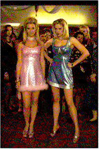

|
||
| Movie Credits | Buy It! |
Romy and Michele's High School Reunion
Review by Carrie Gorringe
|  | Directed by David Merkin Starring Mira Sorvino, Lisa Kudrow, Screenplay by Robin Schiff, |
The next big trend this year in filmmaking, aside from dinosaurs, snakes, volcanoes and black humor, seems to be the inclusion of high school reunions as a plot device upon which to hang all of the main characters’ deepest psychic foibles. Sometimes, as in Grosse Pointe Blank, the device is used intelligently; that is, to say, it’s introduced and abandoned as soon as is decently possible. More often, unfortunately, the device becomes the sole premise of a film, and this usually leads to the usual cliché-ridden muck that can be summed up in one out-of-context phrase: the revenge of the nerds. It is a theme which, doubtless, has a certain appeal; not many of us survived the hell known as high school without a few emotional gouges, and there are times when watching the former "beautiful people" of our adolescence get what’s coming to them is not without considerable appeal. This, however, is not one of them.
Romy (Sorvino) and Michele (Kudrow) are two bleached-blonde air-heads living in Venice, CA, who appear to have spent the greatest part of the decade on autopilot after graduating from high school. Their speech is peppered with the usual conversation-wasters such as "like", "you know", and the ever-useful and eloquent expression of disdain known as "duh"; their preoccupations are nightclubbing, junk food and why they are both single and unsuccessful as they near the age of thirty. In short, to borrow some of their parlance, they don’t have a clue – and wouldn’t recognize one if it hit either of them broadside. One day, while working as a cashier at the local Jaguar dealership, Romy encounters one of the real nerds from her past, Heather (Garafolo), now a successful businesswoman, and learns that it’s high-school-reunion time. Faster than you can chant "road trip" in a mindless monotone, the girls are ready to take their act back to Tucson, AZ. One minor problem stands between them and redemption; while filling out the registration forms that are supposed to detail their accomplishments, the two finally discover that there are none to document. Nevertheless, with a little bit of window-dressing, and a great big lie or two (or three), they soon possess enough courage to go back and wow the masses.
Unfortunately, by the time the ladies take to the open highway, the film is displaying the same reliability rating as their borrowed Jag. It obviously didn’t occur to screenwriter Schiff or director Merkin that these characters, whose personalities were based on a conversation between two women in – where else – a ladies’ room, perform their own act of self-satire, however unintentionally; it’s especially surprising that Merkin, whose credits include writing and producing for shows like The Simpsons, Newhart and The Tracey Ullman Show, missed this rather critical element. Not only are Romy and Michele’s characters unappealing, because their stupidity renders any humor in their characters redundant, they’re also extremely vulnerable; under the circumstances, subjecting them to further attacks simply renders them even more unfunny and (if they weren’t already almost willfully stupid) deserving of pity. You end up cringing in embarrassment for these women, not empathizing with their plight. This type of humor is utterly unpleasant, and its use inspires questions about the motives of people who would find this sort of thing to be an appropriate premise for a comedy. At least black humor, at its best, generally has the good taste – one of the few instances in which it does display good taste – to reserve its venom for relatively strong, and deserving, targets. It’s not that all of the principals involved (especially Garafolo, who provides this film with the all-too-few good moments it has) don’t give strong performances, but their work can best be described as attempting to breathe life into a script that was hopeless before it ever got to the filming stage. Like the main characters, Romy and Michele’s High School Reunion gets all dressed up, but has no place to go.
Contents | Features | Reviews | Books | Archives | Store
Copyright © 1999 by Nitrate Productions, Inc. All Rights Reserved.